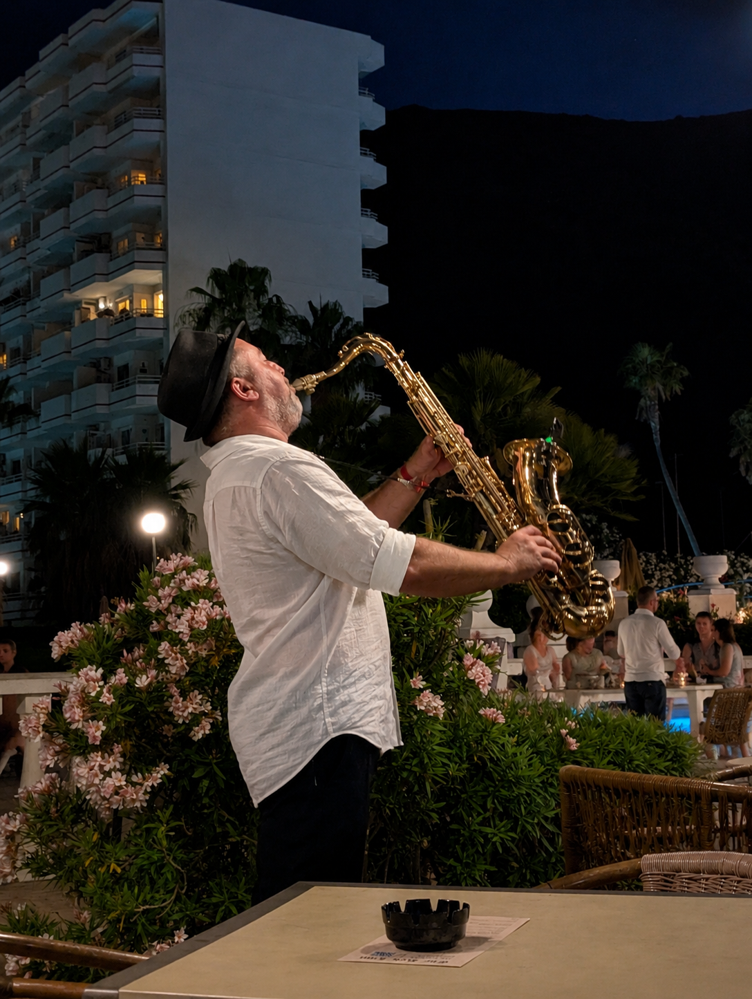
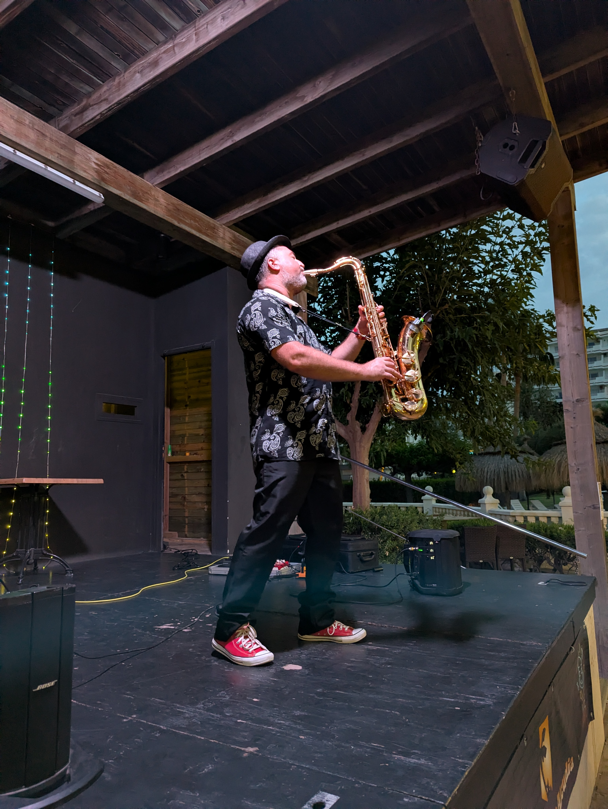

Música en directo para celebraciones en Alcúdia
Alcúdia reúne espacios muy distintos: hoteles, fincas, terrazas, restaurantes y celebraciones cerca del mar. El saxo permite adaptar la actuación a ese contexto, desde una sesión tranquila al atardecer hasta un momento más rítmico para fiesta o cóctel.
La propuesta está pensada para integrarse en el evento con elegancia: sonido cuidado, presencia sobria y repertorio flexible según el ambiente que quieras construir.
Servicios en la zona
- Bodas y celebraciones privadas en Alcúdia.
- Hoteles, terrazas, cenas y experiencias para huéspedes.
- Eventos con repertorio ambiental, jazz, pop o bailable.
- Colaboraciones con DJ para momentos de más energía.
Fotos
Saxo en directo para celebraciones en Alcúdia.


También